FOODS
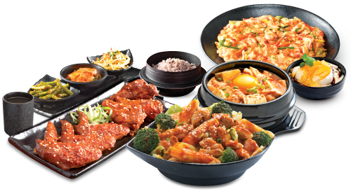1. Chili Pickled Cabbage (Kimchi 김치)
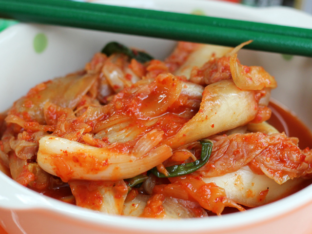I’m going to start this South Korean food list with not really a dish at all, but something that is critically vital and quintessential to any Korean meal: KIMCHI.
While there are many different kinds of kimchi, the most common version is made with napa cabbage that is preserved and lightly fermented in bright red chili flakes. Love kimchi and you’re on your way to being a Korean food connoisseur!
There were quite a few meals in Seoul where I settled for nothing more than rice and kimchi.
Cost – comes free nearly every restaurant you eat at, but I bought a huge sack of homemade kimchi to eat with rice for 5,000 Won ($4.39) – it must have been 1.5 kilos!
2. Samgyeopsal (삼겹살)
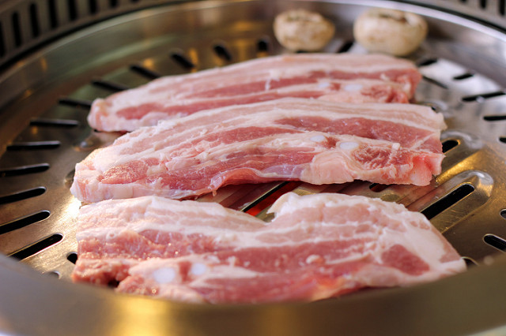Fatty slices of pork belly grilled before your nose is a South Korean foodie favorite. A few slabs of this ultra-tasty pork along with garnishes of lettuce leaves, garlic and chili paste, and you’ve got a flavor to cherish.
It’s not the healthiest South Korean food, but if you are a lover of pig, samgyeopsal is something you can’t miss eating when you’re in Korea!
Cost – about 8,000 Won ($7.00) per plate
3. Pork Bulgogi (Daeji Bulgogi 불고기) (삼겹살)
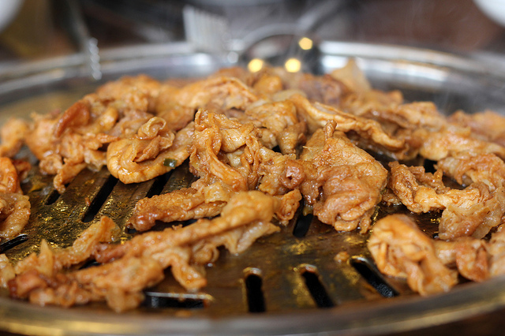Another famous Korean specialty barbecued meat is known as Bulgogi. While it’s normally made from beef, bulgogi can also be made with thin strips of pork or chicken.
Before the meat is grilled, it’s marinated in sweet soy sauce with lots of garlic and sesame oil. The version I ate above was from the New Valley restaurant in Seoul that specializes in pork bulgogi known as Dwaeji Bulgogi.
As a Thai meat lover, this daeji bulgogi was a dish I couldn’t get enough of – highly recommended!
Cost – around 8,000 ($7.00) Won per plate
4. Korean Barbecue (Gogigui 고기구이)
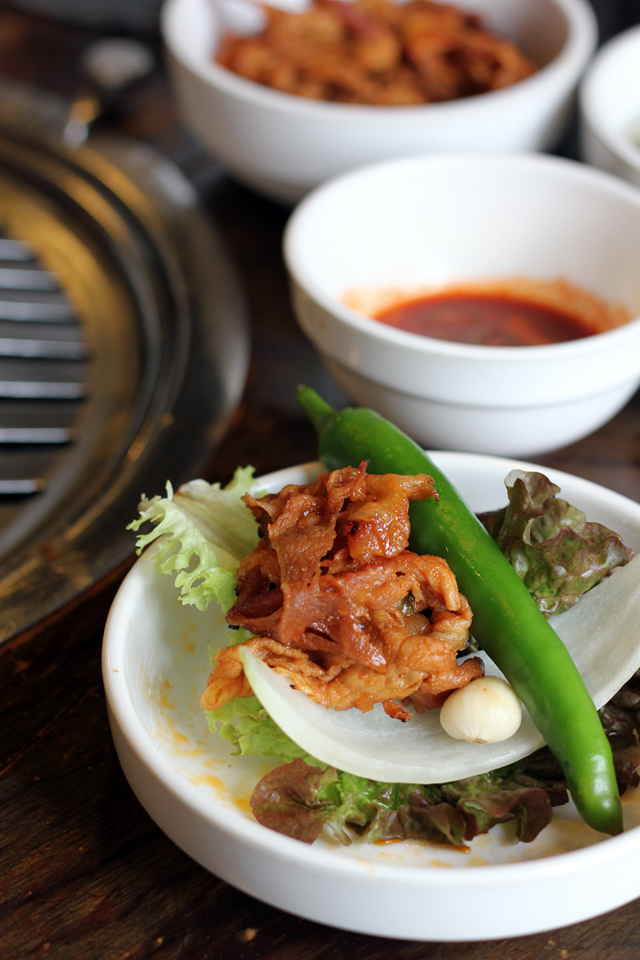There’s no better way to spend an evening in Korea than sitting around a personal grill munching down a traditional Korean barbecue feast.
Order a few plates of meat, and you’ll be delivered a vast array of side dishes and the all-important pieces of lettuce, garlic, peppers, and chili pastes to fashion little meat wraps.
Note: One of the interesting things I learned eating Korean barbecue in Seoul was that you must order 2 or more plates of the same meat – you can’t order just 1 plate. In other words, if you go to eat with just 2 people, you’ll have to get 2 plates of pork belly, or 2 plates of beef – not 1 plate of pork belly and 1 plate of beef.
Cost– varies greatly depending on meat but in the 8,00o Won ($7.00) per person range
5. Hangover Stew (Haejangguk 해장국)
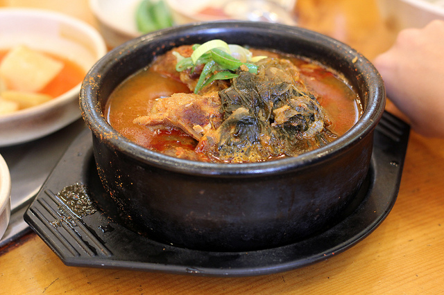The famous Korean hangover stew is something I was really excited to sample when I arrived in South Korea. It came in a piping hot earthenware dish.
There are a number of different variations of Haejangguk, but the one I ate was made with pork spine bones. The broth was rich and spicy, flavored with tender chunks or fatty pork and Korean chili paste.
Known to cure hangovers, after eating this masterpiece of Korean flavor, I suffered a Korean food hangover and all I wanted to do was collapse on a sofa and take a nap. One of the tastiest things I ate in Seoul!
Cost– 5,000 – 6,000 Won ($4.39 – $5.26)
6. Soft Tofu Stew (Sundubu Jjigae 순두부찌게)
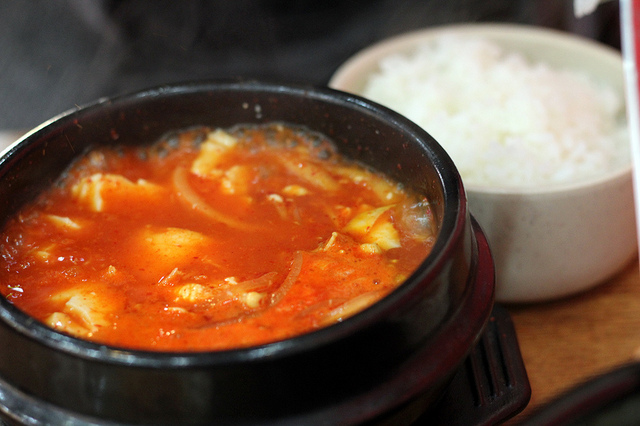A flaming hot pot of Sundubu Jjigae is a flavorful Korean dish. Made with super soft tofu, a few bits of seafood, addictive kimchi soup, and an egg thrown on top, there’s not much else as comforting on a cold rainy day.
This tofu stew is best enjoyed with a side of steamed rice and a few pickled vegetables.
Cost– 5,000 Won ($4.39)
7. Mixed Seafood Stew
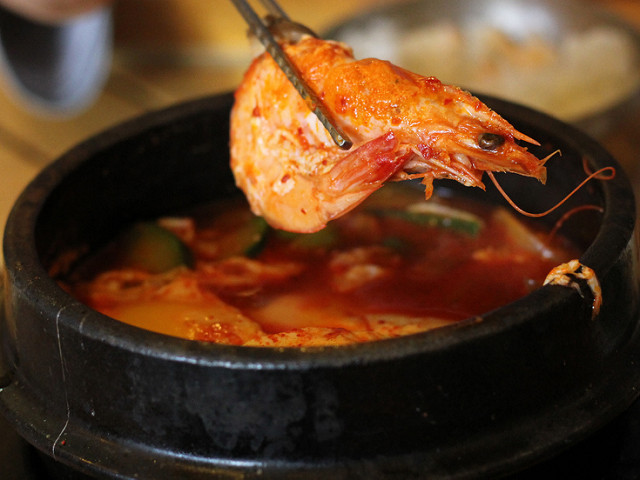Among the repertoire of South Korean jjigae hot chili infested stews is the massively flavorful seafood variation made with whatever kind of seafood is on hand all boiled in a hot earthenware pot of goodness.
Cost– 5,000 Won ($4.39)
8. Kimchi Stew (Kimchi Jjigae 김치찌개)
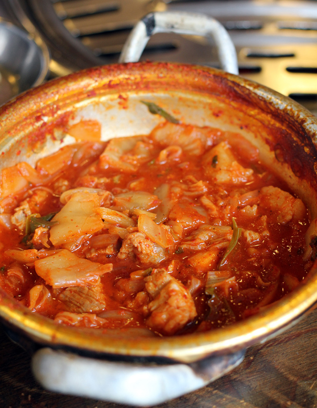South Korean food is unbelievably delicious, but if I could choose just one thing to eat over and over again, it would have to be kimchi jjigae.
I’m not alone, it happens to be one of the most beloved everyday dishes to eat in Seoul and it’s one of the most affordable complete dish meals to eat in Seoul.
Napa cabbage kimchi is boiled with chunks of fatty pork and a few other seasonings and ingredients and then brewed into a stew that boasts intense flavors and will have your belly craving for more!
Cost – 4,000 – 5,000 Won ($3.51 – $4.39)
9. Fish Stew (Saengseon Jjigae 생선찌개)
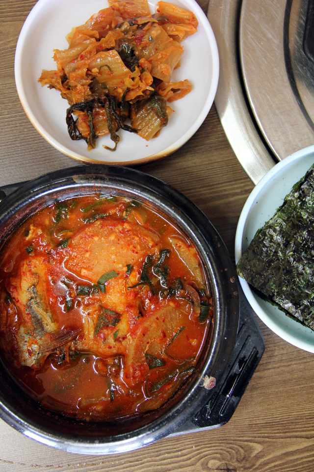As a lover of fish, it was a joy to eat the same delicious Korean kimchi soup base made with fish. Though the fish was filled with bones, the flavor it provided was nothing short of outstanding!
Cost – 5,000 Won ($4.39)
10. Spicy Stir Fried Octopus (Nakji Bokkeum 낙지볶음)
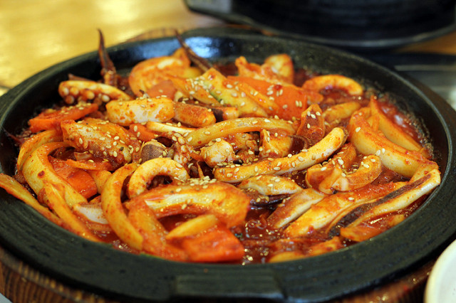Koreans have a love affair with octopus. While I wasn’t able to try the famous live squirming octopus tentacles while in South Korea, I was able to get a taste of chopped octopus stir fried with a few assorted vegetables in red chili paste.
The flavor reminded me of Thai pad prik gaeng, heavy on the sweet red Korean chili paste.
Cost – 7,000 – 10,000 Won ($6.14 – $8.77)
11. Korean Ox Bone Soup (Seolleongtang 설렁탕)
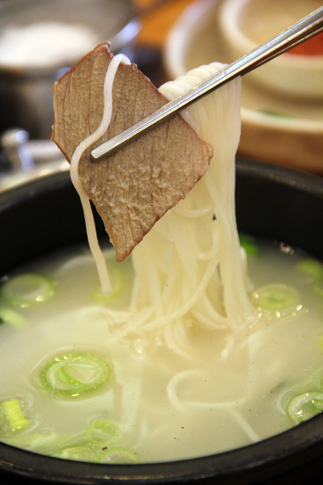Ox bones simmered on low heat for hours and hours is the highlight of Korean seolleongtang. The dish is served plain, a few light noodles, slices of beef and green onions.
The broth is delivered to you unsalted and unseasoned so it’s up to you to add salt, pepper, chili paste and extra green onions to your own taste.
Cost – 5,000 – 6,000 Won ($4.39 – $5.26)
12. Hotpot Mixed Rice (Dolsot Bibimbap 돌솥 비빔밥)
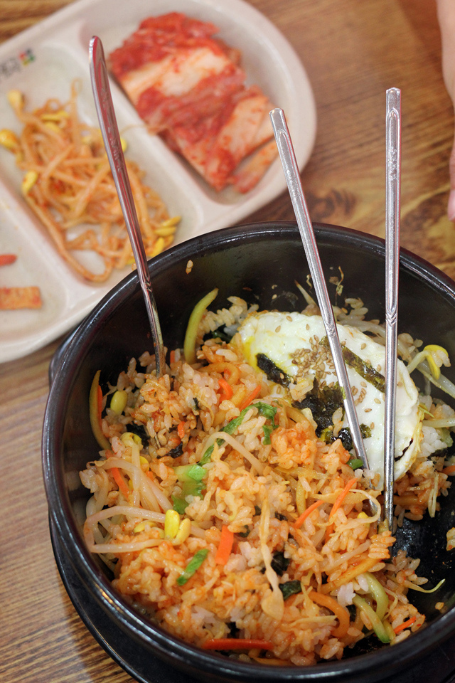Famous and widely available, bibimbap is like fried rice, but instead of being fried it’s just all mixed up like a salad. It’s the khao yam or khao kluk kaphi or Korean cuisine.
The dish consists of rice on the bottom, a few different kinds of sauteed vegetables, an egg, and toasted seaweed flakes and sesame seeds on top. If it’s not salty enough, you can normally add more gochujang chili paste to make it tastier.
Dolsot bibimbap is served in a scorching earthenware pot so every bite is extremely hot in temperature. Be sure to start mixing it immediately so the rice doesn’t get too crunchy burnt on the bottom!
Cost – 4,000 – 5,000 Won ($3.51 – $4.39)
13. Korean Mixed Rice (Cold Bibimbap 비빔밥)
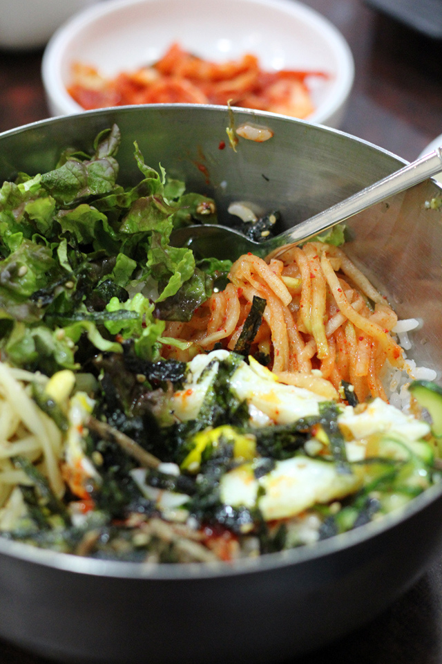Similar to the Dolsot Bibimbap mentioned above, the cold variation is served in a metal pot. Mix all the ingredients together and bibimbap makes for a fantastic lunchtime delight.
I enjoyed both the cold and hot versions, but given the choice, I preferred the scorching hot dolsot bibimbap.
Cost– 3,000 – 5,000 Won ($2.63 – $4.39)
14. Steamed Mandu Dumplings (Jjinmandu 찐만두)
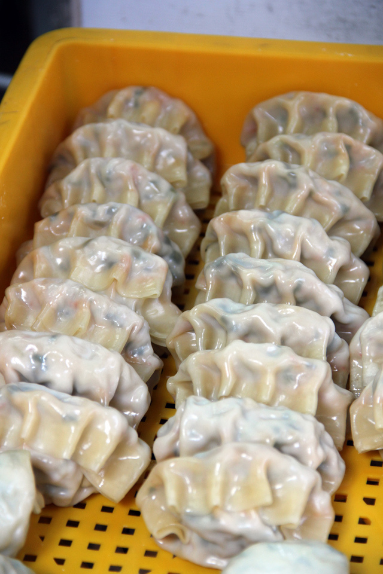Similar to jiaozi in China or gyoza in Japan, Korean mandu dumplings are noodle like wrappers stuffed with a variety of different ingredients. Pork, onions, cabbage, carrots, and mung bean noodles are all common ingredients within these pillows of delicious goodness.
The steamed versions are known as Jjinmandu.
Cost – 3,000 for a plate ($2.63)
15. Deep Fried Mandu (Yaki Mandu)
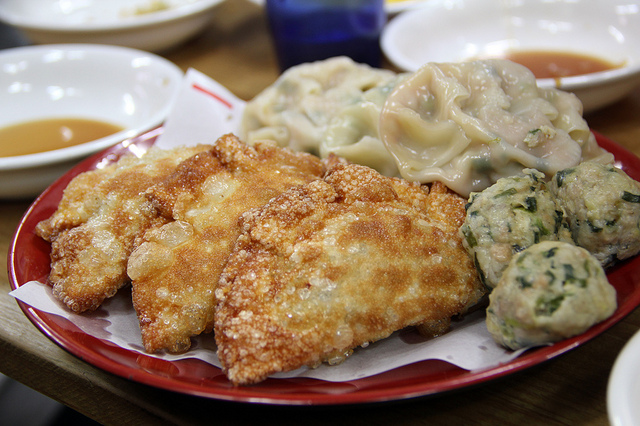Stuffed with pork, glass noodles and an array of salty seasonings, these deep fried mandu’s are guaranteed to be mouthwatering. They are most delicious when serving piping hot and dipped in the soy vinegar sauce provided.
Cost 3,000 Won for a plate ($2.63), this mixed platter cost me 7,000 Won
16. Noodles in Ice Soup (Mul Naengmyeon 물 냉면)
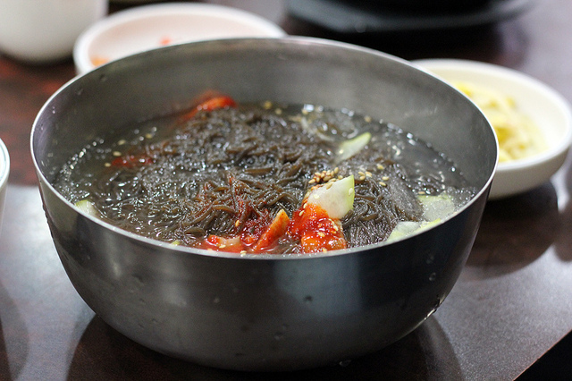I was fascinated how South Korean food incorporates extremely piping hot dishes as well as extremely cold dishes. I’ve eaten cool noodles in China, but Korea is the first time I’ve ever been where there’s a noodle dish that’s actually served in ice.
These buckwheat noodles are originally from Pyongyang in North Korea, but they are widely available in South Korea as well. I loved the gummy texture of the noodles and the sesame seed essence in the soup.
Cost – 3,000 – 5,000 Won ($2.63 – $4.39)
17. Mixed Cold Noodles (Bibim Naengmyeon 비빔 냉면)

Though every bite made me colder, I highly enjoyed this bowl of kimchi flavored bibim naengmyeon. The noodles were thin and chewy, topped with slices of cucumber, cabbage, a hard boiled egg, and a slosh of sour kimchi flavored ice.
Cost – 3,000 – 5,000 Won ($2.63 – $4.39)
18. Kimchi Fried Rice (Kimchi Bokkeumbap 김치 볶음밥)
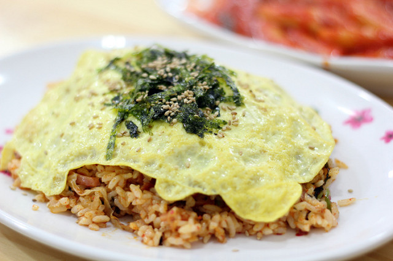Take South Koreas most iconic vegetable garnish (kimchi), stir fry it with a few chunks of hot dog or luncheon meat and rice, cover it with a fried egg and sprinkle it with toasted seaweed and sesame seeds and you’ve got a dish that no one could dislike!
It’s the type of South Korean food that tastes good any day of the week or for whatever mood you’re in. Don’t forget to eat kimchi fried rice with a side of kimchi!
Cost– 3,000 – 5,000 Won ($2.63 – $4.39)
19. Fried Sweet Potato Noodles (Japchae 잡채)
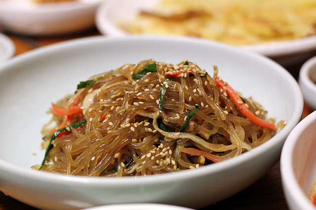I’ve always been a lover of stir fried translucent noodles. The Korean version is wonderful – chewy stir fried sweet potato noodles mixed with slivers of carrots, cucumber, onions, mushrooms and sometimes pieces of meat.
Fried in sesame oil and garnished with toasted sesame seeds, japchae has a mouthwatering fragrance that a taste you’ll love.
Often served as a side dish.
20. Mung Bean Pancake (Bindaetteok 빈대떡)
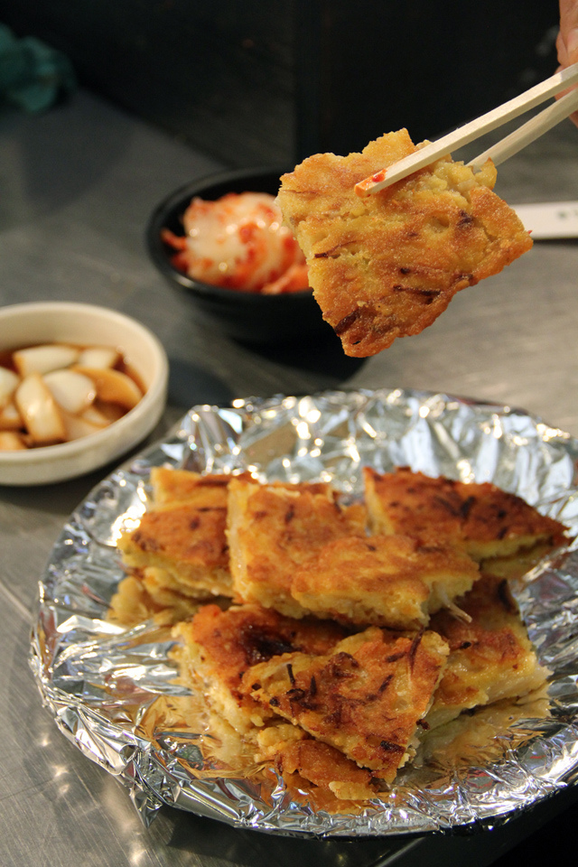South Korean food includes a variety of pancakes. These are not your ordinary pan fried hot cakes with a bit of syrup on top, Korean pancakes are salty, filled with tons of ingredients and fried in lots of oil!
Among the selection, one pancake I really enjoyed eating, again at the Gwangjang Market, was the mung bean pancake known as bindaetteok.
Made from ground mung beans, green onions and kimchi, this beauty was deep fried and served with a vinaigrette dipping sauce. Eating Korean pancakes kind of reminded me of short eats in Sri Lankan food.
Cost– 4,000 Won ($3.51).